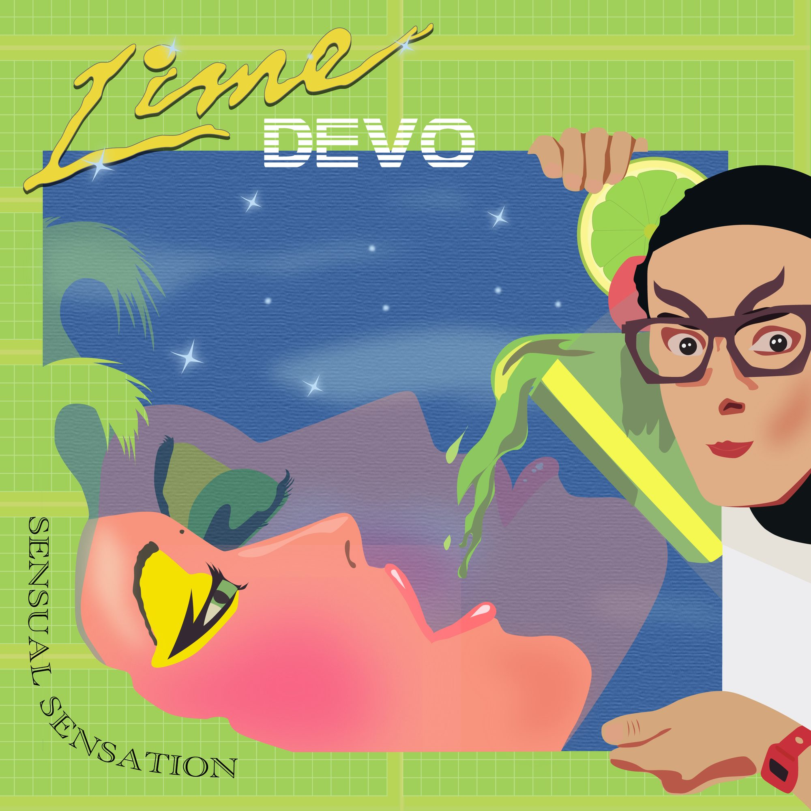
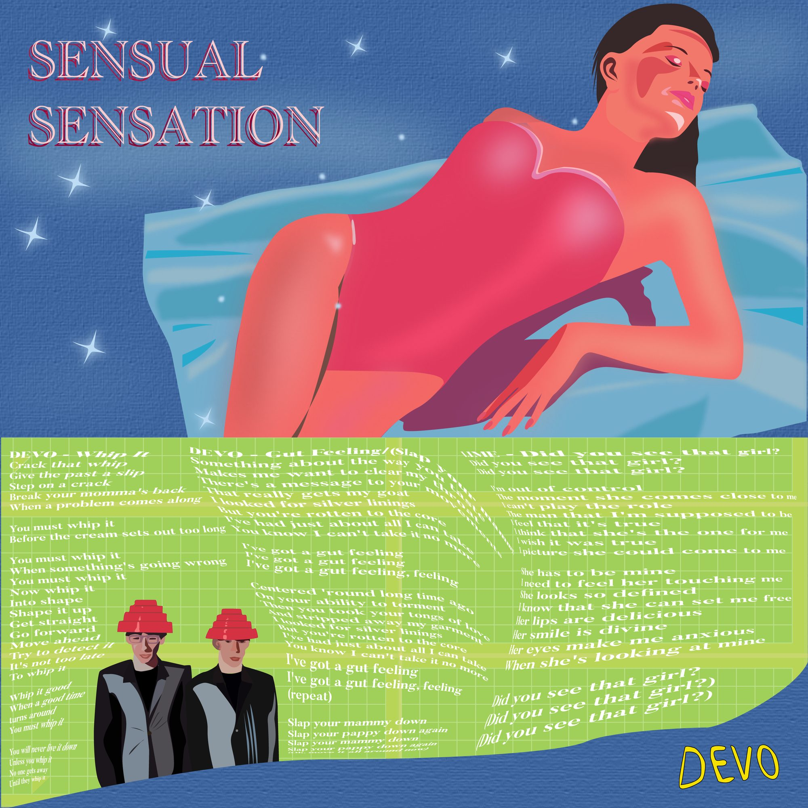
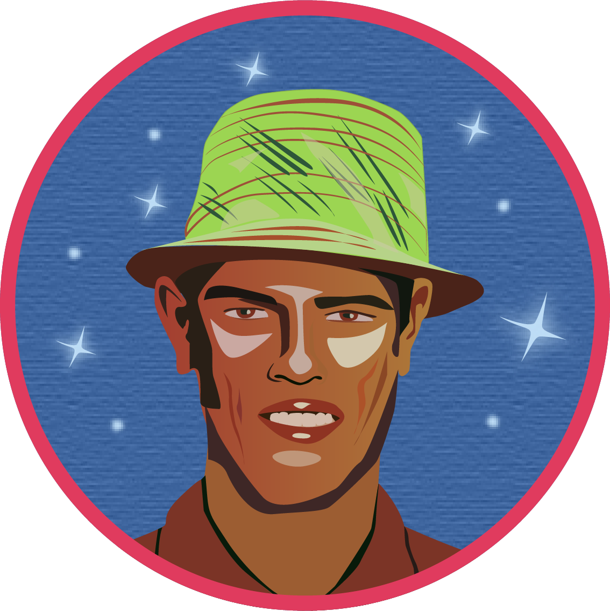

LP Cover Design [2021]
A practice in Graphic Design.


The assignment for this project was to create an album cover inspired by a decade. I chose to work with the 80s, with a focus on the 'New Wave' genre. The album covers I designed, were therefore inspired by album covers from the bands "Devo" and "Lime". I chose these bands, as their aesthetic was representative of the decade and inspiring to work with as a graphic designer. The final album cover, as presented, is a concoction of elements from the Bands' own covers, of which i have traced, and further developed to be an album cover in itself.
Inspiration taken from Lime's "Sensual Sensation" (1984) and "Take the Love" (1986), as well as Devo's band characteristics that are present across their album releases.
